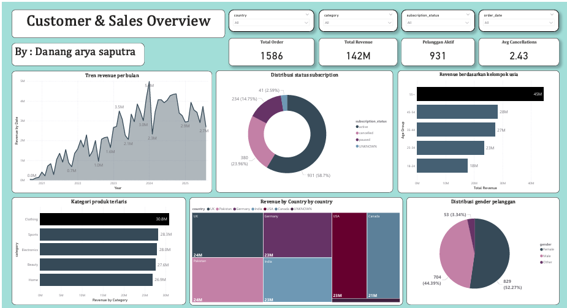

Customer Sales & Retention Analysis Dashboard
- Membersihkan dan menganalisis 1.586 data transaksi pelanggan menggunakan Python serta membangun dashboard interaktif di Power BI untuk mengidentifikasi faktor-faktor yang memengaruhi customer churn, seperti pengeluaran pelanggan, demografi, status subscription, dan riwayat pembatalan.
- Mengidentifikasi tingkat pembatalan subscription sebesar 23,96% serta menghasilkan rekomendasi strategi retensi pelanggan melalui program win-back, survei exit, dan segmentasi pelanggan berdasarkan usia.
- Merancang 6+ visualisasi interaktif beserta custom DAX measures untuk memantau KPI dan performa penjualan senilai $142M.
Python (Pandas)Google ColabPower BIDAX